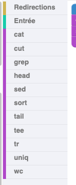
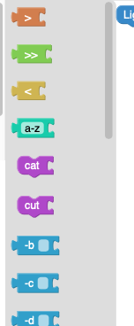

Créer une tâche
Cette documentation explique comment créer une tâche pour le projet UnixFilters, en suivant les étapes :
- ajouter les blocs
- modifier l’énoncé
- configurer les fichiers de test
- vérifier la solution
Ajouter des blocs à une tâche
Les blocs sont configurés dans le fichier public/task.js. Il contient les blocs que l’utilisateur pourra manipuler dans l’interface.
Exemple :
function initTask(subTask) {
subTask.gridInfos = {
hideSaveOrLoad: false,
conceptViewer: false,
actionDelay: 200,
includeBlocks: {
groupByCategory: false, // ou true selon le besoin
generatedBlocks: {
unixfilters: [
// Ajouter ici les noms des blocs autorisés (ex : "cat", "grep", "sort")
],
},
},
// Autres paramètres
};
}
groupByCategory
L'option groupByCategory indique si les blocs sont affichés groupés par type de commande ou en vrac :
Exemple :
groupByCategory: true |
groupByCategory: false |
|---|---|
|  |  |
Compatibilité des blocs
Chaque option est associée à une commande principale (comme grep, sed, etc.), mais peut être utilisée avec d’autres si elle est compatible.
Exemple :
Le bloc option_i_flag_grep est conçu pour grep, mais fonctionne aussi avec sed :
option_i_flag_sed.
La liste des compatibilités est disponible dans le fichier public/unixfilters.js dans le dictionnaire optionTooltips
Modifier l'énoncé
L’énoncé de la tâche est dans le fichier public/index.html, dans la section #taskContent.
Exemple :
<div id="taskContent">
<div id="taskIntro">
<p>
<span class="easy">Consignes pour la tâche niveau easy</span>
<span class="medium">Consignes pour la tâche niveau medium</span>
<span class="hard">Consignes pour la tâche niveau hard</span>
</p>
<p>
<span class="short">Résumé court de l’objectif</span>
</p>
<p class="long">Description plus détaillée si nécessaire</p>
</div>
</div>
Ajouter le fichier manipulé
Dans le checker, ajouter un fichier d'entrée dans le dossier checker/tree/main/exemple_checker/tests/gen
Ce fichier représente les données que la commande Unix doit manipuler dans l’exercice.
Vérification du résultat
La vérification se fait dans le checker, à l’aide de plusieurs fichiers :
Dans le checker, dans le fichier checker/blob/main/exemple_checker/tests/files/test01.out, ajouter la solution attendue par l'exercice.
Exemple :
Si l’utilisateur doit exécuter cat monfichier.txt, placez le contenu attendu de ce fichier dans test01.out.
Le fichier exemple_checker/tests/gen/checker.py compare ensuite le résultat obtenu en exécutant le code généré par les blocs et la solution dans test01.solout, en enlevant les espaces et retour à la ligne, et renvoie un objet. Pour en savoir plus, consultez la documentation du checker (pas complet)